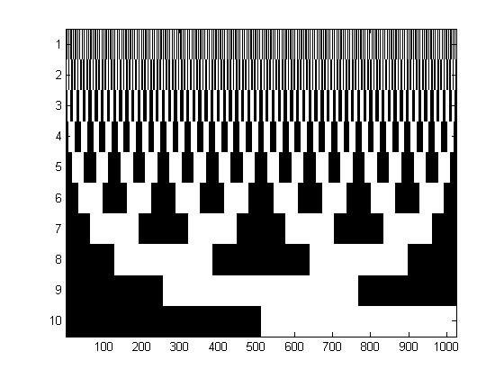
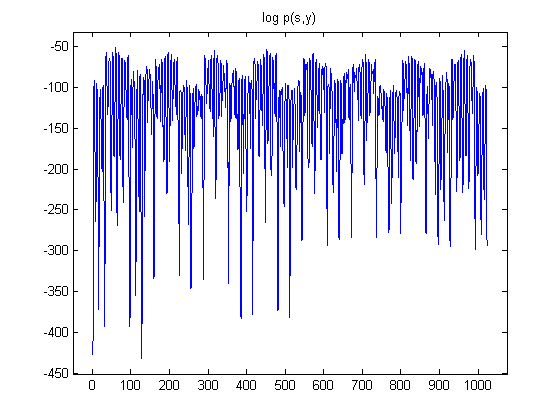
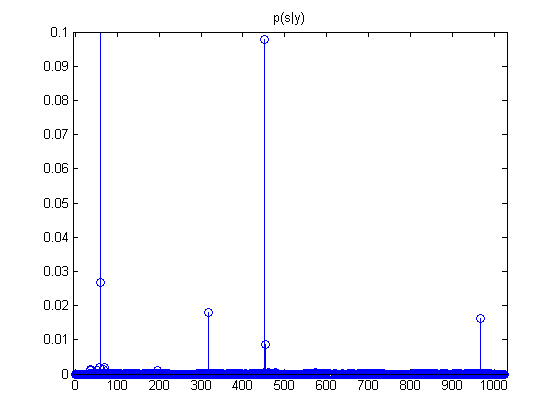
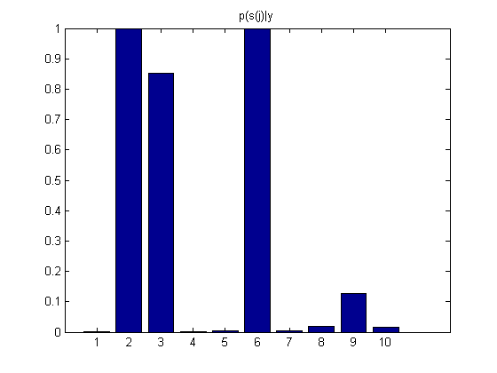

All subsets regression
setSeed(0);
N = 20; D = 10;
w = randn(D,1);
ndx = randperm(D);
w(ndx(1:5))=0;
keep = find(w ~= 0);
Sigma = randpd(D);
mu = randn(D,1);
model = struct('mu', mu, 'Sigma', Sigma);
X = gaussSample(model, N);
sigma = 1;
y = X*w + sigma*randn(N,1);
numofmodel = 2^D;
sigmaPrior = 100;
bitPrior = 0.1;
score = zeros(1, numofmodel);
Models = zeros(numofmodel, D);
for i= 1:numofmodel
if i==1
s = zeros(1,D);
else
s = graystep(s, 1);
end
Models(i,:) = s;
Rs = diag(sigmaPrior*s);
norm0 = sum(s);
Phi1Inv = inv(X*Rs*X' + sigma*eye(N,N));
scoreSS(i) = - 0.5*y'*Phi1Inv*y + 0.5*log(det(Phi1Inv))- 0.5*N*log(2*pi) ...
+ norm0*(log(bitPrior) - log(1-bitPrior)) + N*log(1-bitPrior);
end
figure
imagesc(Models');
colormap gray
printPmtkFigure('grayCodeModelsGray')
figure
plot(scoreSS);
title('log p(s,y)')
axis_pct
printPmtkFigure('grayCodeLogpost')
post = exp(normalizeLogspace(scoreSS));
figure;
stem(post)
axis([-5 numofmodel+5 0 0.1])
title('p(s|y)')
printPmtkFigure('grayCodePost')
marg = sum(Models .* repmat(post(:), 1, D), 1);
figure;
bar(marg)
title('p(s(j)|y')
printPmtkFigure('grayCodeMarg')
fprintf('top models\n');
ndx = find(post>=0.01);
for i=1:length(ndx)
m = ndx(i);
fprintf('p(%d)=%5.3f: ', m, post(m));
fprintf('%d ', find(Models(m,:)))
fprintf('\n')
table{i,1} = m;
table{i,2} = post(m);
table{i,3} = sprintf('%d, ', find(Models(m,:)));
end
latextable(table, 'horiz', {'model', 'prob', 'members'}, ...
'hline', 1, 'name', 'graycode', 'format', '%5.3f')
fprintf('true weight vector\n');
fprintf('%4.2f, ', w); fprintf('\n')
top models
p(60)=0.820: 2 3 6
p(61)=0.027: 2 6
p(317)=0.018: 2 6 8 9
p(452)=0.098: 2 6 9
p(965)=0.016: 2 3 6 10
true weight vector
0.00, -1.67, 0.13, 0.00, 0.00, 1.19, 0.00, -0.04, 0.33, 0.00,
   